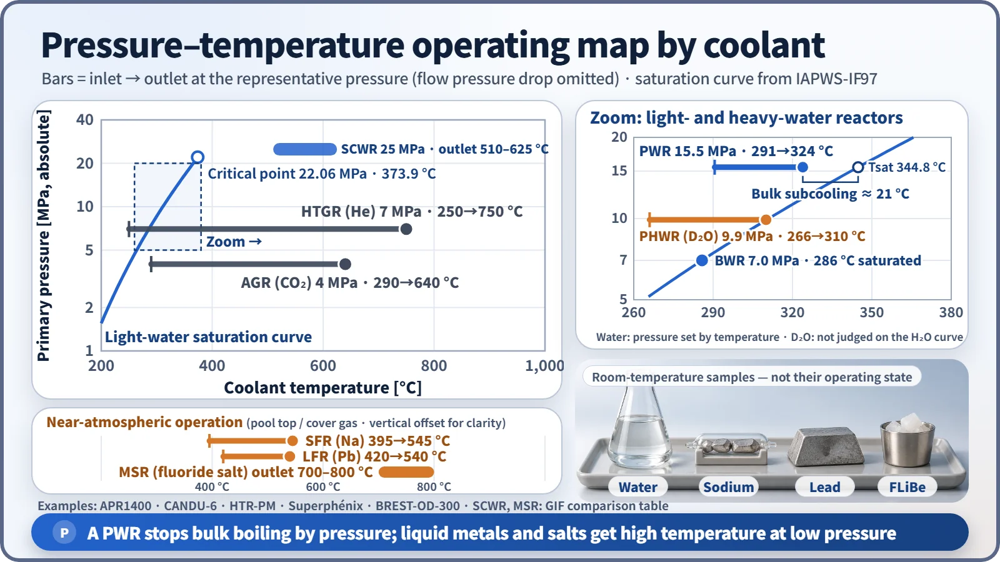
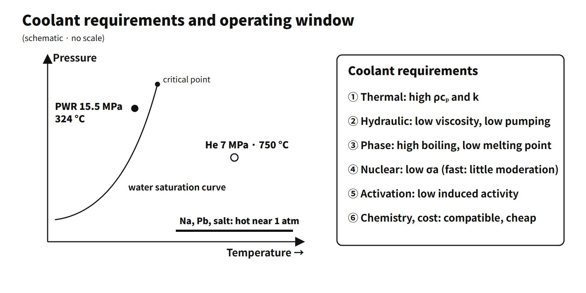

Policy, Economics & Reactor Types · C-PE-001
Reactor Coolant Selection and Reactor-Type Comparison — How Water, Gas, Liquid Metal and Molten Salt Set Pressure and Temperature
Why water reactors need 15.5 MPa while sodium, lead and salt run hot near atmospheric pressure: heat capacity, conductivity, pumping power, activation and chemistry compared.
A reactor coolant is the fluid that removes the heat generated in the core and carries it toward the steam generators and turbine. A good coolant stores and conducts plenty of heat (high ρcₚ and k), flows with little pumping power, does not boil at low pressure, absorbs few neutrons and is little activated, is chemically compatible with structural materials, and is cheap.
The choice of coolant largely fixes a reactor type's pressure, temperature and neutron spectrum.
Principle and mechanism
Seven requirements
| Category | Requirement | Why it matters |
|---|---|---|
| Thermal | High volumetric heat capacity ρcₚ, high thermal conductivity k | Heat carried with less flow; smaller cladding-to-coolant temperature difference |
| Hydraulic | Low viscosity, low pumping power | Smaller house load and pumps |
| Phase change | High boiling point, low melting point | Low-pressure operation, no freezing |
| Nuclear | Low neutron absorption σa | Neutron economy in thermal reactors; fast reactors also need little moderation |
| Activation | Low induced activity, short half-lives | Dose and maintenance access |
| Chemical | Compatible with fuel, cladding and structures; little reaction with water and air; stable under radiolysis | Prevents corrosion, fire and hydrogen |
| Economy and safety | Cheap and plentiful, easy to purify, favorable reactivity feedback | Operating cost, inherent safety |
No coolant meets every requirement, so what was sacrificed and which design features compensate for it define the character of each reactor type.
The requirements in numbers
![Comparison of seven coolants: volumetric heat capacity bars (FLiBe 4.68, water 4.02, Pb 1.55, LBE 1.48, Na 1.07, CO2 0.032, He 0.023 MJ per cubic metre kelvin), thermal conductivity (Na about 66, Pb about 17, water 0.55 W/m K), and relative pumping power on a log scale with water as 1 (FLiBe 3.5, Pb 235, LBE 241, Na 57, CO2 about 46,000, He about 29,000), with typical-temperature-rise values of 0.85 for Na, 6.5 for Pb, 15 for He and 63 for CO2, plus the formula pumping power proportional to mu^0.2 over rho squared cp^2.8](../../assets/images/concepts/c-pe-001-coolant-selection/fig1-coolant-heat-capacity-pumping.webp)
To carry thermal power Q with a temperature rise ΔT requires a mass flow ṁ = Q/(cₚΔT). Assuming a turbulent friction factor f ∝ Re−0.2, the same flow geometry and constant properties, the pumping power is Ẇ ∝ μ0.2/(ρ²cₚ2.8) (the same form as El-Wakil's coolant figure of merit). It is a relative hydraulic power under identical conditions, not an actual pump or blower power ratio.
| Coolant (condition) | ρcₚ [MJ/m³·K] | Pumping-power index (H₂O = 1) | k [W/m·K] | Melting / boiling point at 1 atm [°C] |
|---|---|---|---|---|
| H₂O (15.5 MPa, 307 °C) | 4.02 | 1 | 0.55 | 0 / 100 |
| FLiBe (650 °C) | 4.68 | 3.5 | about 1.1 | 459 / about 1,430 |
| Na (450 °C) | 1.07 | 57 | about 66 | 98 / 883 |
| Pb (450 °C) | 1.55 | 235 | about 17 | 327 / 1,749 |
| CO₂ (4 MPa, 500 °C) | 0.032 | about 46,000 | about 0.05 | — |
| He (7 MPa, 500 °C) | 0.023 | about 29,000 | about 0.3 | — |
Properties were calculated from IAPWS-IF97 (water), Fink & Leibowitz (Na), the OECD/NEA handbook (Pb), Romatoski & Hu (FLiBe) and the ideal-gas law (gases).
Water and molten salt are strong at storing heat (ρcₚ); liquid metals are overwhelmingly strong at conducting it (k). FLiBe has a higher ρcₚ than water but a high viscosity, so its index is 3.5. Gases have a ρcₚ below 1/100 of water's, so they are run at high pressure to raise density and with a large ΔT. Because Ẇ ∝ ΔT−2.8, changing only ΔT brings an SFR (about 150 °C) down to 0.85, about the level of water (about 33 °C), and an HTGR (about 500 °C) down to about 15 (first-order approximation).
Nuclear properties and activation
Thermal-neutron absorption cross sections are H 0.332 b, D 0.00052 b, Na 0.53 b, Pb 0.17 b, and almost zero for He-4. Fast reactors must avoid moderation, so they use Na, Pb or He rather than hydrogen. Each coolant produces different activation products.
- H₂O: O-16(n,p)N-16 (T½ 7.13 s, γ 6.13 MeV). It disappears within minutes of shutdown.
- D₂O: D(n,γ)T (T½ 12.3 years). Tritium has to be managed.
- Na: Na-24 (T½ 15.0 h, γ 1.37 and 2.75 MeV). This is why an intermediate sodium loop is used.
- Pb-Bi: Bi-209(n,γ) → Po-210 (T½ 138 d, α).
- FLiBe: tritium is produced from Li-6 and Li-7, so highly enriched Li-7 is needed.
What it means in a plant
Operating conditions by reactor type

| Reactor type | Coolant | Moderator | Primary pressure | Inlet → outlet [°C] | Example |
|---|---|---|---|---|---|
| PWR | H₂O (single phase) | H₂O | 15.5 MPa | 290.6 → 323.9 | APR1400 |
| BWR | H₂O (boiling in core) | H₂O | about 7.0 MPa | steam about 286 (saturated) | Typical BWR |
| PHWR | D₂O (pressure tubes) | D₂O (calandria, low temperature and pressure) | outlet header 10.0 MPa (abs) | about 266 → 310 | CANDU-6 |
| AGR | CO₂ | Graphite | about 4 MPa | about 290 → 640 | UK AGR |
| HTGR | He | Graphite | 7 MPa | 250 → 750 | HTR-PM |
| SFR (LMFBR) | Na | None | near atmospheric | about 395 → 545 | Superphénix |
| LFR | Pb (Pb-Bi) | None | near atmospheric | about 420 → 540 | BREST-OD-300 |
| MSR | Molten fluoride salt | Graphite or none | near atmospheric | outlet 700–800 | GIF target |
The saturation pressure of light water is 7.0 MPa at 286 °C, 10.0 MPa at 311 °C and 15.5 MPa at 344.8 °C (IAPWS-IF97). At 15.5 MPa with a hot-leg temperature of 323.9 °C, a PWR keeps about 21 °C of bulk subcooling to prevent bulk boiling. This is a separate quantity from the DNBR margin. As a result, the outlet temperature of water-cooled reactors is tied to around 330 °C, and their thermal efficiency stays at about 33–35 %. Liquid metals and molten salts have high boiling points and reach 500 °C or more near atmospheric pressure. They have no depressurization boiling after a break, but freezing and chemical reactions become the problems to solve.
Coolants of fast reactors, PWRs and HTGRs — pros and cons
| H₂O (PWR) | Na (SFR) | He (HTGR) | |
|---|---|---|---|
| Advantages | Cheap and mature, high ρcₚ, doubles as moderator, negative moderator and void feedback | Atmospheric-pressure operation, boiling point 883 °C, high k, little moderation | Chemically and neutronically inert, no phase change, 750 °C or more → efficiency and hydrogen production |
| Disadvantages | Needs high pressure, limited outlet temperature, depressurization boiling in a LOCA, radiolysis and corrosion | Violent reaction with water and air, Na-24, opaque, preheating against freezing at 98 °C, sodium void coefficient can be positive at the core center | Low ρcₚ → high pressure and large blowers, leaks easily, graphite oxidation if air or moisture gets in |
| Compensating design | Pressurizer, ECCS | Intermediate loop, pool type, steam generator leak monitoring | Low power density and graphite heat capacity for passive decay-heat removal |
CO₂ (AGR) is cheap and runs hot, but graphite oxidation has to be managed. Pb does not react violently with water, but it is heavy and corrodes steel, so its oxygen concentration is controlled.
Light-water and heavy-water reactors
In a light-water reactor, H₂O serves as both coolant and moderator, and reactivity is controlled with boric acid. A heavy-water reactor (CANDU-6) separates the hot, high-pressure D₂O coolant (380 pressure tubes) from the cold, low-pressure D₂O moderator (calandria). Absorption in D is about 1/640 of that in H, so natural uranium can be used. The price is the cost of D₂O, tritium, and a small positive coolant void coefficient. The fundamental differences between CANDU and the PWR are the moderator, the fuel (natural vs enriched), pressure tubes vs a pressure vessel, on-power vs shutdown refueling, and the reactivity control and shutdown systems (SDS1 and SDS2).
The six Gen-IV systems
The six systems selected in the GIF technology roadmap (2002, updated 2014) are distinguished by their coolants: VHTR (He, 900–1,000 °C), GFR (He, 850 °C), SFR (Na, 500–550 °C), LFR (Pb, 480–570 °C), MSR (fluoride salt, 700–800 °C) and SCWR (supercritical water, 510–625 °C). Outlet temperatures follow the GIF comparison table and differ between sources. The common direction is to leave the light-water saturation curve for high temperature at low pressure (or supercritical conditions).
Regulatory basis
- 10 CFR 50 Appendix A: GDC 10 (fuel design limits), GDC 11 (reactor inherent protection), GDC 14 (reactor coolant pressure boundary), GDC 33, 34 and 35 (coolant makeup, residual heat removal, emergency core cooling). They were written with light-water reactors in mind.
- NRC RG 1.232 Rev. 0 (April 2018): principal design criteria for non-light-water reactors, giving ARDC adapted from the GDC plus SFR-DC and MHTGR-DC. For example, GDC 14, which assumes a high-pressure boundary, does not fit reactor types that operate near atmospheric pressure as written.
- IAEA SSR-2/1 Rev. 1 (2016): contains design requirements for the reactor coolant system (Requirement 47 and others). It is mainly a water-cooled reactor standard and is applied in a graded manner to other types.
- South Korea: Articles 18 (reactor inherent protection) and 21 (reactor coolant pressure boundary) of the Korean technical standard rule for reactor facilities also belong to a light-water-centered framework.
- Compared with when the questions were set: after the exam questions (2001–2005) came the Gen-IV roadmap update (2014) and the non-LWR design criteria (RG 1.232, 2018). Coolant properties and the selection principles are unchanged.
Easily confused pairs
| Coolant | Moderator | |
|---|---|---|
| Purpose | Remove and transport heat | Slow down neutrons |
| Key indicators | ρcₚ, k, pumping power, boiling point | ξ, slowing-down power ξΣs, moderating ratio ξΣs/Σa |
| Fast reactors | Na, Pb, He | None |
| Storing heat (ρcₚ) | Conducting heat (k) | |
|---|---|---|
| Strongest | FLiBe, water | Na |
| Effect | Less flow and pumping power | Smaller cladding temperature difference |
"Sodium stores heat better than water" is a wrong statement. Its thermal conductivity is about 120 times higher, but its volumetric heat capacity is about 1/4.
Key points at a glance
Model answer (10 points): requirements for a reactor coolant
- Definition: a fluid that removes and transports core heat (in LWRs it is also the moderator).
- Thermal: high ρcₚ → less flow; high k → small cladding temperature difference.
- Hydraulic: low viscosity → low pumping power, Ẇ ∝ μ0.2/(ρ²cₚ2.8).
- Phase change: high boiling point → low-pressure operation (water needs 15.5 MPa); low melting point → no freezing.
- Nuclear: low σa; for fast reactors, little moderation (no hydrogen).
- Activation: low induced activity, short half-lives (N-16 7 s, Na-24 15 h, Po-210).
- Chemical: compatible with structures, no reaction with water or air, stable under radiolysis.
- Economy and safety: cheap, negative void coefficient, no fire or explosion.
- Examples: H₂O (PWR, BWR), D₂O (PHWR), CO₂ (AGR), He (HTGR, VHTR, GFR), Na (SFR), Pb (LFR), fluoride salt (MSR).

This is a model answer, not an official solution. It reflects the criteria current as of 2026.
Exam relevance
Coolant selection and reactor-type comparison have appeared five times in the Korean Professional Engineer (Nuclear Power) exam: 65th exam (2001), session 4, Q1 (fill in the moderator and coolant table for PWR, BWR, PHWR, HTGR and LMFBR); 71st exam (2003), session 2, Q1 (pros and cons of fast-reactor, PWR and HTGR coolants); 71st exam (2003), session 3, Q1 (five fundamental differences between CANDU and the PWR); 76th exam (2005), session 4, Q4 (five or more requirements for a reactor coolant); and 2023 exam, session 1, Q4 (characteristics of coolants and moderators in light-water and heavy-water reactors). The typical question types are listing the requirements, filling in coolant and moderator by reactor type, and comparing the pros and cons of specific coolants. Back the requirements with numbers (ρcₚ, k, boiling point, σa) and keep heat storage (ρcₚ) and heat conduction (k) apart.